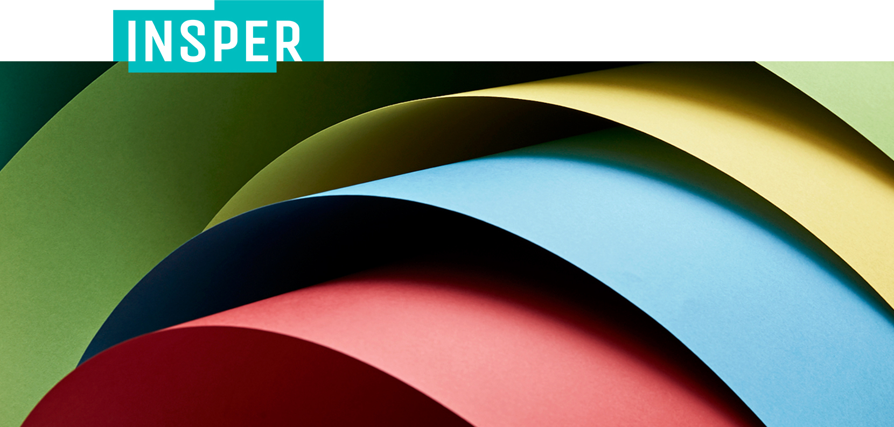

인스퍼

INSPER 는 ‘inspiring’ 과 ‘paper’의 합성어로,
디자이너 곁에서 영감을 주는 종이가 되겠다는 의미를 담고 있습니다.
러프그로스지, 색지, 무늬지, 펄지, 티끌지 등 다양한 색상과 패턴으로 구성된
개성있는 팬시지입니다.
-
러프그로스지
일반 인쇄용지 대비 벌키하고 소프트한 특징을 가지며,
자연스러운 질감과 촉감이 느껴지는 제품입니다.인스퍼M, 인스퍼 에코, 앙상블, CCPn, 뉴하이크림
-
색지
컬러 염료를 투입하여 파스텔톤의 자연스러운 색상부터
선명한 색상까지, 수십가지의 색상을 보여주는
제품입니다.매직칼라, 시그니처, 시그니처에코, 매직실크, 매직블랙,
매직쇼핑, 파일지, 앨범지 -
무늬지
마크롤과 펠트를 사용하여 독특하고
다양한 패턴의 무늬를 종이에 새겨넣은 제품입니다.페스티발, 매직패브릭, 매직매칭, 매직니트, 매직한글,
매직엠보, 매직터치, 매직펠트 -
펄지
진주알의 부드럽고 은은한 펄 느낌을 재현하기 위해
펄 코팅을 한 제품입니다.오로
-
워터마크지
표면에 무늬가 드러나지 않고 종이 내면에
무늬를 넣은 제품입니다.매직쉐도우
-
티끌지
섬유 입자나 특정 분말을 혼합하여 만든 제품으로,
종이표면에 티끌처럼 입자와 분말 알갱이가 보이는 것이 특징입니다.매직콤마, 매직코튼, 제주감귤지, 알로에지, 녹차지